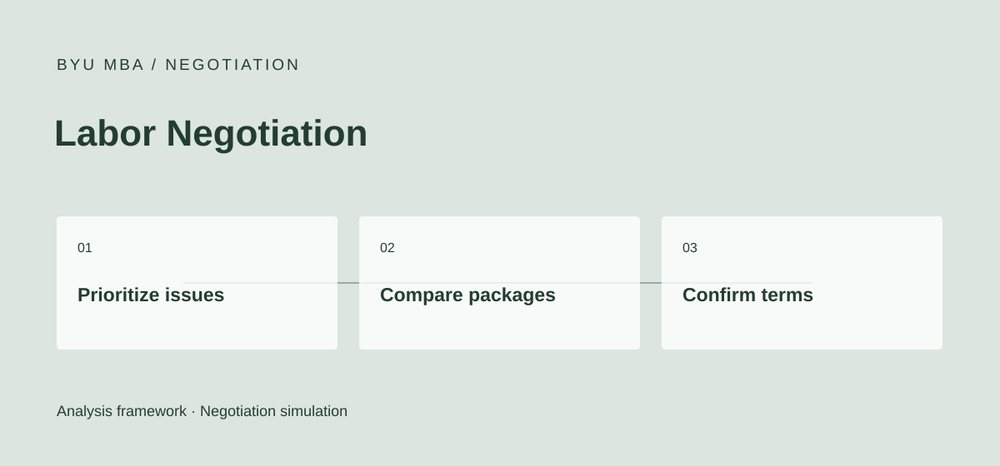

Negotiation simulation · 2026
Labor Negotiation: Baxter / Local 190
A classroom simulation of a negotiation between company management and a labor union. My preparation focused on evaluating the complete agreement rather than treating each issue as a separate bargain.
- My role
- Management-side participant
- Year
- 2026
- Work type
- Negotiation simulation
- Focus
- Negotiation planning · Decision modeling

My contribution
I worked from the management side and developed a preparation worksheet that ranked issues and alternative outcomes. The matrix covered production targets, decision authority, incentives, worker autonomy, compensation, benefits, and employment protections.
Analysis
The worksheet separated priorities, possible outcomes, and agreed terms. It also distinguished the group incentive system from annual profit sharing so that two different compensation questions were not treated as one. Suggested scores provided a consistent way to compare options; they were my preparation framework, not official case scores.
Analysis summary
| Issue group | Business consideration | Use in negotiation |
|---|---|---|
| Productivity | Targets and operating authority | Identify core management priorities |
| Compensation | Base pay and incentive structures | Compare the combined package |
| Employment terms | Benefits, transfers, and protections | Evaluate concessions across issues |
| Unconfirmed terms | Items requiring clarification | Keep assumptions separate from agreement |
Framework summarized from my preparation, analysis, and reflection.
Decision process
The analysis considered packages of terms. A proposed concession had to be evaluated alongside the operating or financial benefit received elsewhere. Items with unclear terms remained flagged for confirmation rather than being treated as settled.
What I learned
A useful negotiation model makes assumptions visible and supports a conversation. Its value comes from helping a team explain its priorities, compare complete proposals, and identify the terms that still need clarification.